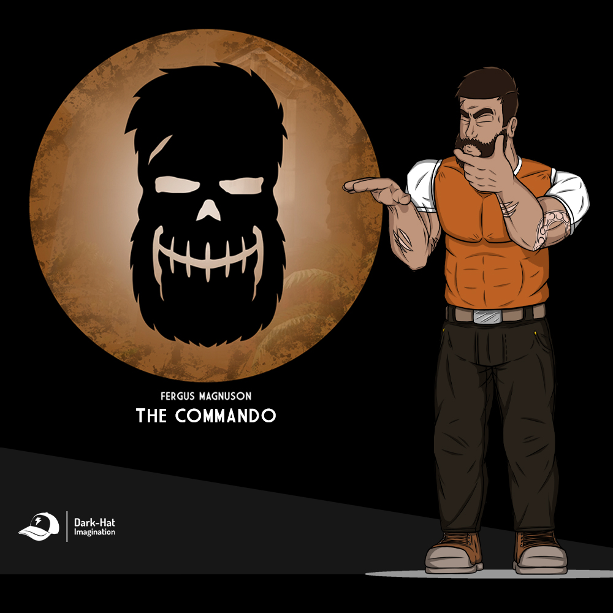

"Callado, calmado pero con una gran fuerza en su interior". Fergus posee grandes atributos que complementan a su equipo, y no hablamos solo de su musculatura, si no también de su capacidad para el manejo de armas de alto calibre y presición, tanto una Minigun como un Rifle de Asalto, son unos de los cuantos artilugios que tiene en su arsenal, puede ser un tipo tranquilo, y muchas veces amigable y amistoso con sus compañeros, pero no lo hagas entrar en seriedad cuando está en combate, porque no terminará su trabajo hasta haber acabado con todo objetivo hostil que se cruce en su camino. Edad: 28 años /Género: Masculino / Altura: 1.95 / Procedencia: Latino / Ubicación Actual: Base de Utilidades.
